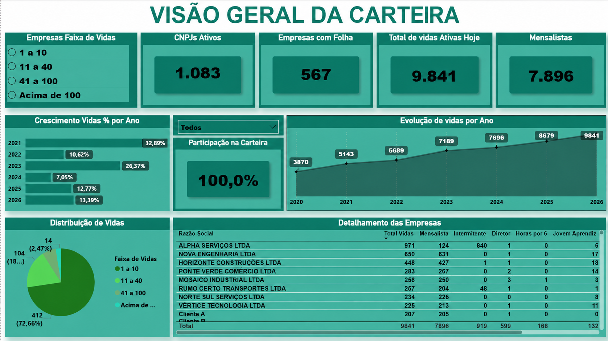

Dashboard de Inteligência e Gestão da Carteira de Departamento Pessoal
Centralização e transformação dos dados do Departamento Pessoal em um painel gerencial desenvolvido em SQL + Power BI, permitindo acompanhar a evolução da carteira de clientes, o volume de colaboradores administrados e a composição das vidas ao longo do tempo.
O dashboard apresenta o crescimento da carteira desde 2020, permitindo analisar a evolução anual do número de vidas e identificar tendências de expansão. Além do volume total, a base é detalhada por empresa e por tipo de vínculo, como mensalistas, horistas, intermitentes, RPA, diretores, jovens aprendizes e demais categorias acompanhadas pelo DP.
Com essas informações consolidadas, a liderança passa a ter uma visão mais clara sobre o tamanho e a complexidade da operação, apoiando decisões relacionadas à capacidade operacional, distribuição de carteira, crescimento da área e planejamento de recursos.
- Integração e tratamento de dados utilizando SQL, estruturando informações de empresas, contratos e colaboradores para análise no Power BI.
- Acompanhamento histórico da carteira desde 2020, demonstrando crescimento anual, total de empresas atendidas e evolução do número de vidas administradas.
- Segmentação das vidas por tipo de vínculo, permitindo visualizar mensalistas, horistas, intermitentes, RPA, diretores, aprendizes e outros perfis da operação.
- Análise da composição da carteira, com distribuição das empresas por faixa de quantidade de colaboradores e participação no volume total administrado.
- Visão detalhada por empresa, permitindo identificar quantidade de vidas, perfil dos contratos e participação de cada cliente na carteira.
- Indicadores gerenciais para apoio à tomada de decisão, fornecendo à liderança informações sobre crescimento, capacidade operacional e características da carteira de clientes.